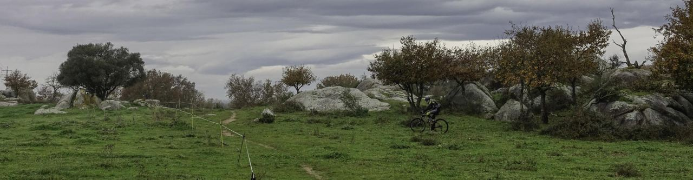

Ruta · Roses
Ruta fàcil, fins i tot familiar , que ens permetrà copsar dos paisatges molt diferents i alhora propers. Una primera part planera, humida , de paisatges agrícoles, amb estanys, pastures i closes ,…